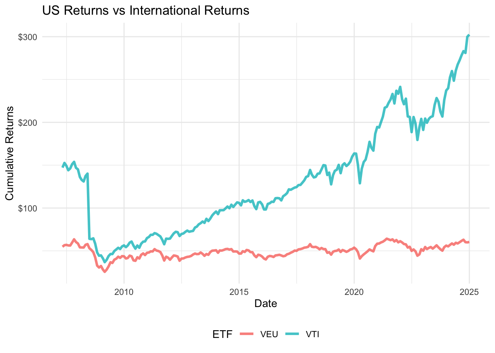

How Should a CUNY Employee Best Secure Their Retirement?
In this last project to wrap the semester, we are taking a dive into the wide world of financial data. Specifically, in this project we are going to analyze the two different retirement plans offered to CUNY employees and see how they differ. Is one better then the other? How do we even define better in this sense? Whats less risky, what will yield you more value over time on average? These questions we will aim to answer.
Tasks 1-3: Acquiring the Data
First to start off, we need to acquire our financial data that will serve as a basis on our calculations going forward. To do this we need to collect financial data covering these metrics:
Wage growth
Inflation
US Equity Market total returns
International Equity Market total returns
Bond market total returns
Short-term debt returns
To do this we are going to take advantage of the AlphaVantage and FRED APIs to acquire the time-series data. After its downloaded I will go over why I picked the specific funds that I did.
For this metric, we are analyzing the Vanguard Total Stock Market Index Fund ETF (VTI). Vanguard is one of the leading providers of ETFs and Mutual Funds in the market. For the sake of consistency in this analysis, all ETFs will be Vanguard provided funds. This ETF captures the total stock market as opposed to just top companies like an S&P 500 index would capture.
International Equity Market Total Returns
For this metric, we are analyzing the Vanguard FTSE All World ex US ETF (VEU), which as the name suggests aims to capture the whole world stock market excluding the US. We already have the US captured in VTI so there is no need to overlap the US in a global metric.
Bond Market Total Returns
For bonds we are using Vanguard Total Bond Market Index Fund Admiral Shares (VBTLX), this aims to capture a broad array of US bonds, short intermediate and long term bonds. Bonds are usually tied to interest rates and are generally a less risky option then stocks. However as the interest rate fluctuates it could cause a downturn in price, and with less risk also comes less reward.
Short-Term Debt Returns
Simiarily, short-term debt returns is a type of bond investment that only focuses on short term investments. This is reserved for only the oldest of employees as it usually makes more sense to invest in longer term securities to increase the potential returns. Therefore this is the lowest risk and lowest return type investment. For this we are using Vanguard Short-Term Bond Index Fund Admiral Shares (VBIRX).
Inflation and Wage Growth
For these metrics we will take advantage of the FRED API to acquire data from the Federal Reserve Economic Data repository. For Inflation we will use a metric called the Consumer Price Index (CPI) which generally measures the cost of an identical basket of goods year over year. Wage growth we will look at the running average of salary increase percentage over the last 12 months.
Task 4 - Analysis
Now that we have the data, there are a few things that might be interesting to take a look at. First its probably worth comparing how US returns compare to the rest of the world. Maybe it can give us some insight on American economic domination or lack thereof.
Code
indices_longer |>filter(ETF =="VEU"| ETF =="VTI") |>ggplot(aes(date, Return, color = ETF)) +geom_line(linewidth =1.2, alpha = .8) +labs(x ="Date",y ="Cumulative Returns",title ="US Returns vs International Returns" ) +scale_y_continuous(labels =dollar_format()) +theme_minimal() +theme(legend.position ="bottom")

While both economies were greatly affected by the 2008 financial crisis, it is actually quite wild to see how much the American market has pulled ahead over global competition.
Another thing worth looking at is the risk vs reward paradigm of bonds vs short term debt returns. Does this hold true?
And our suspicions are confirmed. As we assumed VBTLX has higher highs and lower lows, where as VBIRX is less risky and doesn’t fluctuate as much.
Lastly it might be interesting to see if wage growth is tied at all to inflation like it might be advertised. Generally companies try to account for inflation in annual salary adjustments, but how true is this in practice?
To test this, I simulated to see if wages grew at the same rate as the CPI and overall it is extremely correlated. While wage growth may take some time to see the effects in inflation due to weighted averaging it does generally match. As we see the correlation is near 1. I will also display the table if you want to take a look.
Code
salary |> DT::datatable()
[1] 6.745736
[1] 2.215023
Task 5 - Historical Battle
Now that we have looked into our data, its time to start the heavweight battle between our retirement options, those being Teachers Retirement System (TRS) and Optional Retirement Plan (OPR).
TRS is calculated as follows:
It is based off of the average of the the last 3 years of salary issued to the employee, or Final Average Salary (FAS).
\[
if(N<20, .00167*FAS*N)
\]
\[
if(N = 20, .00175*FAS*N)
\]
\[
if(N>20, (.035+.02*N)*FAS
\]
Its then adjusted for inflation.
\[
Inflation = max(.01, min(.03,mean(CPI*.5)))
\]
OPR is more convoluted and its asset allocation adjusts based on the employees age.
Age 25 to Age 49:
54% US Equities
36% International Equities
10% Bonds
Age 50 to Age 59:
47% US Equities
32% International Equities
21% Bonds
Age 60 to Age 74:
34% US Equities
23% International Equities
43% Bonds
Age 75 or older:
19% US Equities
13% International Equities
62% Bonds
6% Short-Term Debt
Furthermore both the employee and employer contribute to the fund,
$45,000 or less: 3%
$45,001 to $55,000: 3.5%
$55,001 to $75,000: 4.5%
$75,001 to $100,000: 5.75%
$100,001 or more: 6%
The employer contribution is fixed at:
8% for the first seven years of employment at CUNY.
10% for all years thereafter.
Using our historical data (2007-present), lets compare how these options would fare once an employee retires in this year of 2024 assuming they started in 2007.
For this we are assuming a starting salary of 50,000 and age between 25-49.
What we find is that by the time of retirement, approximately $282,000 have accumulated in the ORP fund whereas the TRS will start to pay around $2000 monthly. Given an annual withdrawal of 4% of ORP along with dividing that monthly thats about half of what TRS offers. This isnt that surprising because the longer you work the more you have to contribute to ORP, 17 years here perhaps not being long enough for ORP to overcome the potential TRS benefit.
Task 6 - Simulation Till Death
While its useful to see how each retirement stacks up once an employee decides to end his career, what is more important is seeing how each fares during actual retirement. For this were going to assume a retirement duration of 15 years. How does each plan fare after being used for 15 straight years? In this analysis we will assume rates are fixed, this isnt relevant for TRS but for ORP we will assume these market returns based on long run averages of our data.
US Returns - 7%
International Returns - 4%
Bonds - 2%
Short-Term Debt - 1%
TRS After 15 Years
Code
trs15 <-trs(50000, filter(wages, date >="2007-04-30"), inflation, 15)trs15/(12*15)
[1] 2540.296
After 15 years we find that the average monthly payment works to around $2550.
ORP Fixed Simulation
For ORP we will conduct a fixed simulation, prefaced on the assumption of 4% withdrawals annually, a 2.5% annual inflation rate and a starting balance of $290,000 as calculated previously.av
Code
simulate_orp_withdrawals <-function( initial_balance, annual_withdrawal, average_returns =c(US_equities =0.07, Intl_equities =0.04, Bonds =0.02, Short_term_debt = .01),asset_allocation =c(US_equities =0.54, Intl_equities =0.36, Bonds =0.1, Short_term_debt =0),inflation_rate =0.025,retirement_years =15) {# Number of months in retirement months <- retirement_years *12# Convert annual growth and inflation rates to monthly rates monthly_growth_rate <-sum( average_returns["US_equities"] * asset_allocation["US_equities"], average_returns["Intl_equities"] * asset_allocation["Intl_equities"], average_returns["Bonds"] * asset_allocation["Bonds"] ) monthly_growth_rate <- (1+ monthly_growth_rate)^(1/12) -1 monthly_inflation_rate <- (1+ inflation_rate)^(1/12) -1# Initialize vectors to track balances and withdrawals orp_balance <-numeric(months) withdrawals <-numeric(months)# Set initial values orp_balance[1] <- initial_balance withdrawals[1] <- annual_withdrawal /12# Simulate withdrawals and returns over retirementfor (i in2:months) {# Adjust withdrawal for inflation annuallyif (i %%12==1) { withdrawals[i] <- withdrawals[i -1] * (1+ inflation_rate) } else { withdrawals[i] <- withdrawals[i -1] }# Update ORP balance: apply growth, then subtract withdrawal orp_balance[i] <- orp_balance[i -1] * (1+ monthly_growth_rate) - withdrawals[i]# Prevent negative balanceif (orp_balance[i] <0) { orp_balance[i] <-0 withdrawals[i] <-0# No more withdrawals if the balance is exhaustedbreak } }# Return a list of resultsreturn(list(final_balance = orp_balance[months],total_withdrawn =sum(withdrawals),funds_exhausted =any(orp_balance ==0),withdrawals = withdrawals,balances = orp_balance ))}orp_simulation <-simulate_orp_withdrawals(290000, .04*290000)orp_simulation
While the monthly withdrawals start quite low, around $1150, given we assume the market is always improving this method sees the overall wealth grow quite considerably until death. In an ever growing market 4% is probably a conservative withdrawal amount. However this isn’t how the actual market performs, there are periods of growth and periods of recession. However according to this fixed rate analysis, ORP seems to be a clear winner here. This begs the question what if we weren’t so lucky with market returns?
Task 7 - Bootstrapping
To account for the uncertainties of the market, and the many variables that go into an employees retirement fund, to do a more holistic analysis we will simulate a number of random scenarios to better capture the average performance of TRS and ORP respectively. This process has been abstracted into multiple functions that will run as many simulations as we like. You can take a look at the code but the important details is what has been randomized. We assume a death age of 80 in our simulations.
Employees starting age: 22-63
Starting Salary: 40,000-120,000
Market Returns are randomized monthly based on the Asset, roughly.
US Returns (-15%, 15%)
Intl Returns (-10%, 12%)
Bonds (-1%, 2%)
Short-Term Debt (-.5%, 1.5%)
ORP Results
Code
adjust_allocation <-function(age) {if (age >=25& age <=49) { asset_allocation <-c(US_equities =0.54, Intl_equities =0.36, Bonds =0.10, Short_term_debt =0) } elseif (age >=50& age <=59) { asset_allocation <-c(US_equities =0.47, Intl_equities =0.32, Bonds =0.21, Short_term_debt =0) } elseif (age >=60& age <=74) { asset_allocation <-c(US_equities =0.34, Intl_equities =0.23, Bonds =0.43, Short_term_debt =0) } else { asset_allocation <-c(US_equities =0.19, Intl_equities =0.13, Bonds =0.62, Short_term_debt =0.06) }return(asset_allocation)}orp_random <-function(start, wages, asset_allocation) { months <-length(wages$date) salary <-numeric(months) salary[1] <- startfor (i in2:months) { salary[i] <- salary[i -1] * (1+ (as.numeric(wages$value[i -1]))/1200) } monthly <- salary /12 employee_rate <-sapply(salary, function(s) {if (s <=45000) return(0.03)if (s <=55000) return(0.035)if (s <=75000) return(0.045)if (s <=100000) return(0.0575)return(0.06) }) employer_rate <-c(rep(.08, 7*12), rep(.1, (months -7*12))) employee_contribution <- monthly * employee_rate employer_contribution <- monthly * employer_rate total_contribution <- employee_contribution + employer_contribution orp_balance <-numeric(months)for (i in1:months) { growth_rate <-sum(runif(1, -.15, .15) * asset_allocation["US_equities"],runif(1, -.1, .12) * asset_allocation["Intl_equities"],runif(1, -.01, .02) * asset_allocation["Bonds"],runif(1, -.005, .015) * asset_allocation["Short_term_debt"] )if (i ==1) { orp_balance[i] <- total_contribution[i] } else { orp_balance[i] <- (orp_balance[i -1]*(1+ growth_rate) + total_contribution[i]) } }return(orp_balance[months])}simulate_orp_withdrawals_random <-function( initial_balance, annual_withdrawal, asset_allocation =c(US_equities =0.54, Intl_equities =0.36, Bonds =0.1, Short_term_debt =0),inflation_rate =0.025,retirement_years =15) {# Number of months in retirement months <- retirement_years *12# Convert annual growth and inflation rates to monthly rates monthly_growth_rate <-sum(runif(1, -.15, .15) * asset_allocation["US_equities"],runif(1, -.1, .12) * asset_allocation["Intl_equities"],runif(1, -.01, .02) * asset_allocation["Bonds"],runif(1, -.005, .015) * asset_allocation["Short_term_debt"] ) monthly_growth_rate <- (1+ monthly_growth_rate)^(1/12) -1 monthly_inflation_rate <- (1+ inflation_rate)^(1/12) -1# Initialize vectors to track balances and withdrawals orp_balance <-numeric(months) withdrawals <-numeric(months)# Set initial values orp_balance[1] <- initial_balance withdrawals[1] <- annual_withdrawal /12# Simulate withdrawals and returns over retirementfor (i in2:months) {# Adjust withdrawal for inflation annuallyif (i %%12==1) { withdrawals[i] <- withdrawals[i -1] * (1+ inflation_rate) } else { withdrawals[i] <- withdrawals[i -1] }# Update ORP balance: apply growth, then subtract withdrawal orp_balance[i] <- orp_balance[i -1] * (1+ monthly_growth_rate) - withdrawals[i]# Prevent negative balanceif (orp_balance[i] <0) { orp_balance[i] <-0 withdrawals[i] <-0# No more withdrawals if the balance is exhaustedbreak } }# Return a list of resultsreturn(list(final_balance = orp_balance[months],total_withdrawn =sum(withdrawals),funds_exhausted =any(orp_balance ==0),withdrawals = withdrawals,balances = orp_balance ))}bootstrap_orp <-function(wages, n_bootstrap, asset_allocation_func) {set.seed(123) # for reproducibility bootstrap_results <-numeric(n_bootstrap) avg_monthly_income <-numeric(n_bootstrap) exhaustion_count <-0for (i in1:n_bootstrap) {# Randomly sample a starting salary between $40,000 and $120,000 start_salary <-runif(1, min =40000, max =120000)# Randomly sample a starting age between 22 and 63 age_at_start <-sample(22:63, 1)# Assume death age is 80 death_age <-80# Calculate the ORP balance for each resample orp_balance_working <-orp_random(start_salary, wages,asset_allocation_func(age_at_start)) retirement_years <- death_age - age_at_start -17if (retirement_years >0) { orp_simulation <-simulate_orp_withdrawals_random(orp_balance_working, .04*orp_balance_working, retirement_years = retirement_years) bootstrap_results[i] <- orp_simulation$final_balance avg_monthly_income[i] <- bootstrap_results[i]/retirement_years/12if (orp_simulation$final_balance ==0) { exhaustion_count <- exhaustion_count +1 } }else { bootstrap_results[i] <- orp_balance_working avg_monthly_income[i] <-0 } }# Return a summary of the bootstrap resultsreturn(list(mean =mean(bootstrap_results),lower_ci =quantile(bootstrap_results, 0.025), # 95% CI lower boundupper_ci =quantile(bootstrap_results, 0.975), # 95% CI upper boundexhaustion_percentage = exhaustion_count / n_bootstrap,results = bootstrap_results,monthly_income = avg_monthly_income ))}bootstrap_orp_results <-bootstrap_orp(filter(wages, date >="2007-04-30"), 200, adjust_allocation)as.data.frame(bootstrap_orp_results) |> DT::datatable()
TRS Results
Code
bootstrap_trs <-function(wages, inflation, n_bootstrap) {set.seed(123) # for reproducibility bootstrap_results <-numeric(n_bootstrap) avg_monthly_income <-numeric(n_bootstrap)for (i in1:n_bootstrap) {# Resample wages and inflation with replacement start_salary <-runif(1, min =40000, max =120000) sampled_wages <- wages[sample(1:nrow(wages), nrow(wages), replace =TRUE), ] sampled_inflation <- inflation[sample(1:nrow(inflation), nrow(inflation), replace =TRUE), ]# Randomly sample a starting age between 22 and 60 age_at_start <-sample(22:63, 1)# Assume death age is 80 death_age <-80# Calculate the TRS balance for each resample retirement_years <- death_age - age_at_start -17 bootstrap_results[i] <-trs(start_salary, sampled_wages, sampled_inflation, retirement_years) avg_monthly_income[i] <- bootstrap_results[i]/retirement_years/12 }# Return a summary of the bootstrap resultsreturn(list(mean =mean(bootstrap_results),lower_ci =quantile(bootstrap_results, 0.025), # 95% CI lower boundupper_ci =quantile(bootstrap_results, 0.975), # 95% CI upper boundresults = bootstrap_results,monthly_income = avg_monthly_income ))}bootstrap_trs_results <-bootstrap_trs(filter(wages, date >="2007-04-30"), inflation, 200)as.data.frame(bootstrap_trs_results) |> DT::datatable()
Final Analysis
From our simulations we can really see how TRS and ORP really differ on the big stage. While ORP does at times produce staggeringly high wealth, it also introduces an exhaustion rate close to 40%! This should be alarming to anyone looking for a secure retirement. There in lies the risk vs reward paradigm of ORP or investing in the market for anyone. While in the long term the market will go up, in the short-term anything can happen and all it takes is one bad year to see your net worth go to zero. While 4% withdrawal is generally a safe conservative bet, assuming average market returns of closer to 6%, this could be a problem in downturn years. A more variable withdrawal rate probably makes more sense based on market conditions, be more conservative on poor years and less on big earning years.
TRS has much more consistent results by the nature of its plan. While it may never be able to reach the heights that can potentially yield from a bullish market it is definitely a more secure option. So the better plan? Well it really would depend person to person. If said employee is depending on this as their only assets through retirement, TRS is most likely the safer bet. However, if an employee has worked for a long time, and built a large ORP account, ORP is probably going to yield greater wealth and thus more inheritance money for said employees family once they die. The longer the tenure at CUNY the better the ORP option is, the potential returns will just be much higher. However, if the money is essential to post-retirement survival or the employees tenure is not as long so their investments are less cumulative and less secure then TRS is the better option.